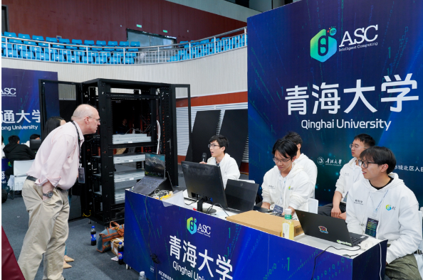

青海大学超算队：五届蝉联ASC一等奖，彰显西部高校硬核实力
发布时间：2025年5月
近日，第十二届ASC世界大学生超级计算机竞赛总决赛在青海大学落幕。作为东道主，青海大学超算队以卓越表现斩获全球一等奖，五届蝉联该赛事一等奖，彰显西部高校在国际科技竞技舞台的硬核实力。
自2016年组建以来，青海大学超算队秉持“以赛促学、以学促研”理念，构建起“系统化选拔、项目化训练、实战化检验”的人才培养体系。团队依托学校在高性能计算领域的持续投入，着力培养兼具工程实践能力与科研创新素养的专业人才，成为西部高校在超算领域的标杆团队。
随着青海省绿色算力战略深入推进，2024年青海大学成立“绿色算力人才培养基地（绿色算力虚拟班）”。基地面向全校理工科开放，以“东数西算”国家战略为导向，通过“分层选拔—梯度培养—课题驱动”模式，重点聚焦并行编程、异构加速、AI for HPC等前沿领域，累计培养百余名掌握绿色算力核心技术的复合型人才，为青海数字经济发展与生态文明建设提供重要人才支撑。

图1：ASC25颁奖典礼——青海大学超算队斩获一等奖

图2：青海大学超算队在ASC总决赛现场进行比赛
在本次赛事中，团队瞄准“绿色算力、智能融合”技术趋势，创新性将 AI for HPC、异构系统协同优化等前沿技术模块纳入训练体系，深化算力架构与算法融合的实战训练。同时，依托虚拟班平台，与省气象局、天文观测台等单位开展协同实践，引导学生将超算技术应用于高原特色场景，实现“学研用”一体化育人突破。
从西北高原走向世界舞台，青海大学超算队用五年五项一等奖的成绩诠释“高原亦能出奇峰”的奋斗精神。在与清华、北大等顶尖高校的竞技中，这支西部高校队伍凭借扎实的技术功底和顽强的拼搏精神屡屡突围。团队将继续依托绿色算力人才培养基地，强化算力技术与青海特色产业的深度融合，为构建西部绿色高效算力体系、推动高性能计算领域区域均衡发展贡献青海智慧。